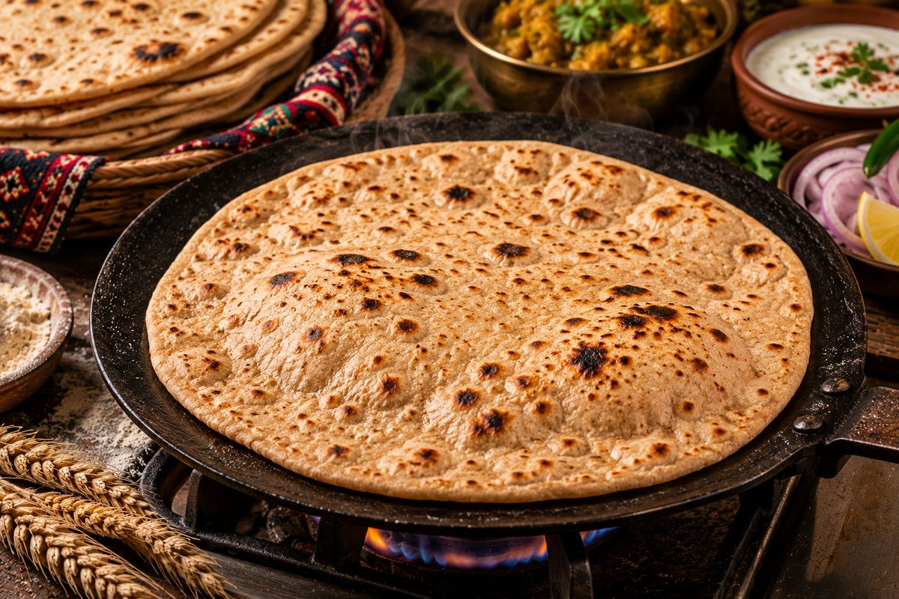
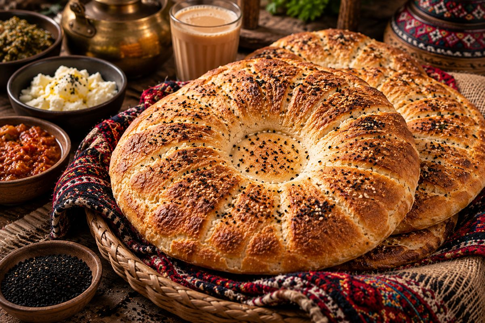
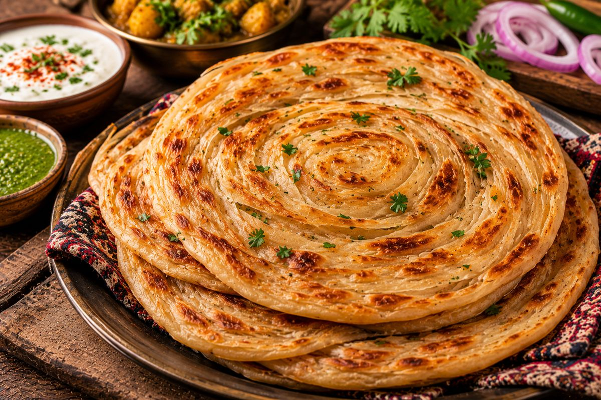

Breads

BreadsBreads · Homestyle
Pakistani tawa roti
Soft, puffed whole-wheat roti. The bread of every Pakistani dinner table.
30 minTime
8 rotisServes
EasyLevel
Method
Tap a step to mark it done.
Fatma's tipSofter dough makes softer roti. It should feel like an earlobe.
Keep cooking
You might also like

Breads
Breads